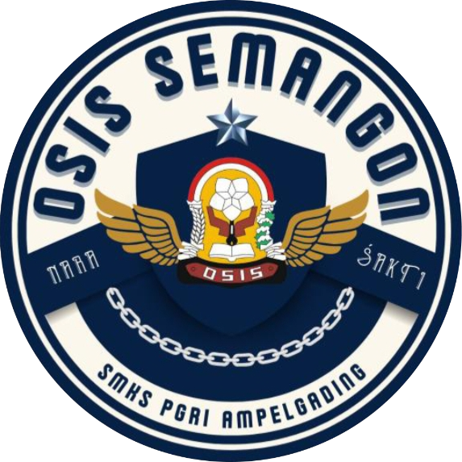
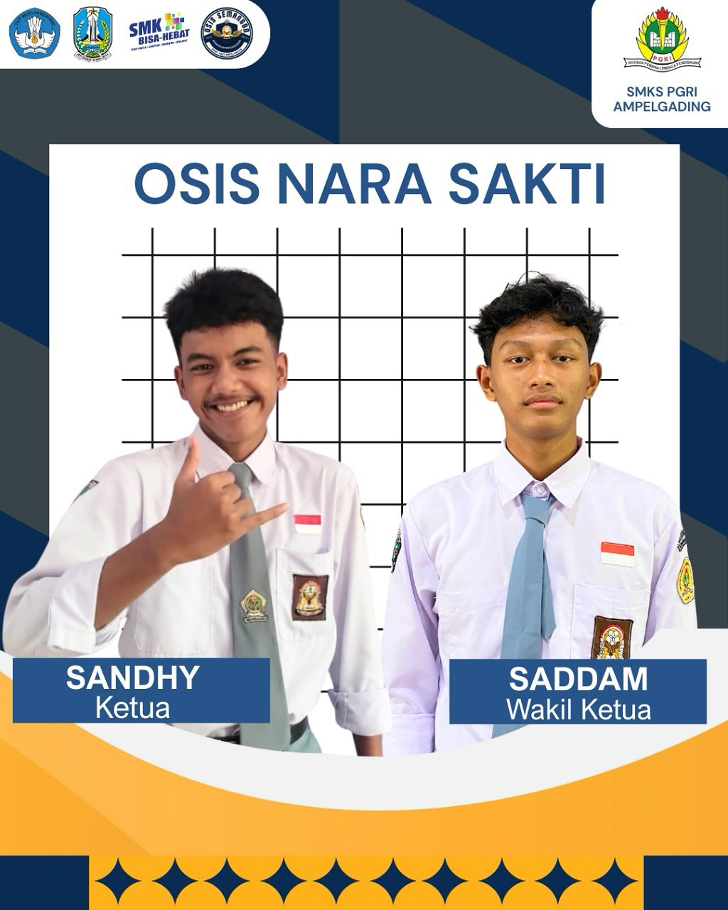
mewujudkan OSIS sebagai wadah pengembangan diri yang aktif, kreatif, inovatif, serta berakhlak mulia, guna menciptakan lingkungan sekolah yang berprestasi dan harmonis.
mewujudkan organisasi yang tertib, transparan, dan inovatif dalam pengelolaan administrasi guna mendukung kelancaran seluruh program kerja.
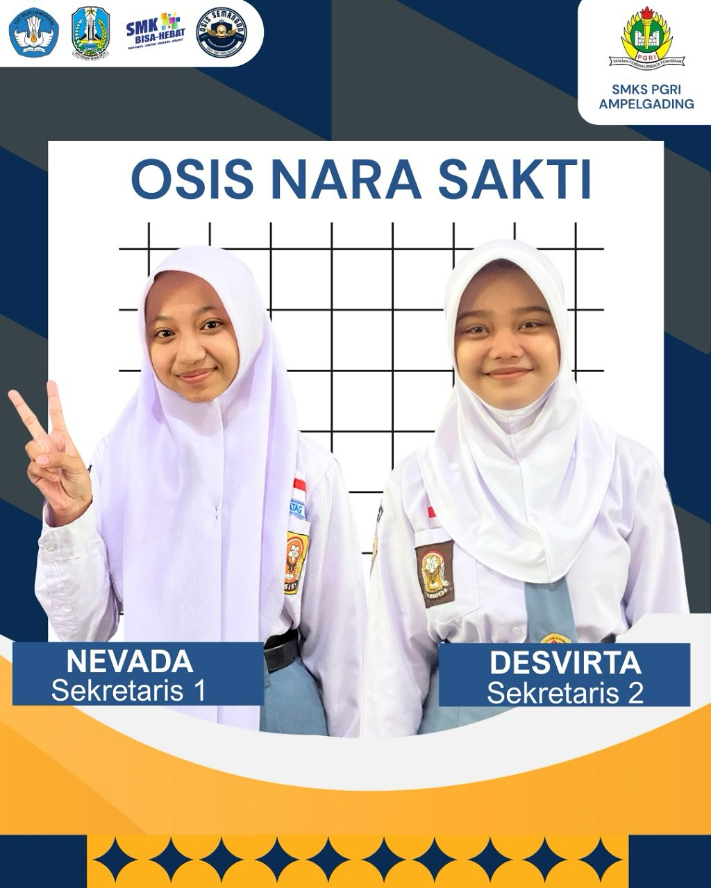
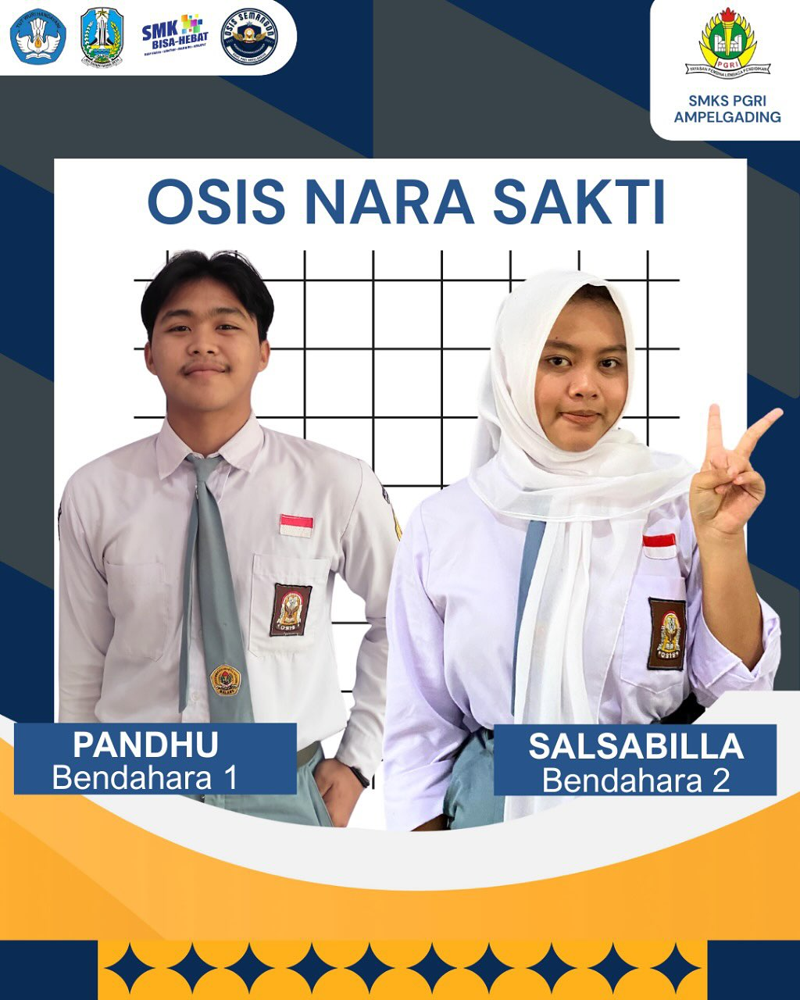
berfokus pada terciptanya pengelolaan keuangan yang transparan, akuntabel (dapat dipertanggungjawabkan), dan tepercaya.
mewujudkan lingkungan sekolah yang religius, harmonis, dan berakhlak mulia dengan berlandaskan nilai-nilai ketakwaan kepada Tuhan Yang Maha Esa.
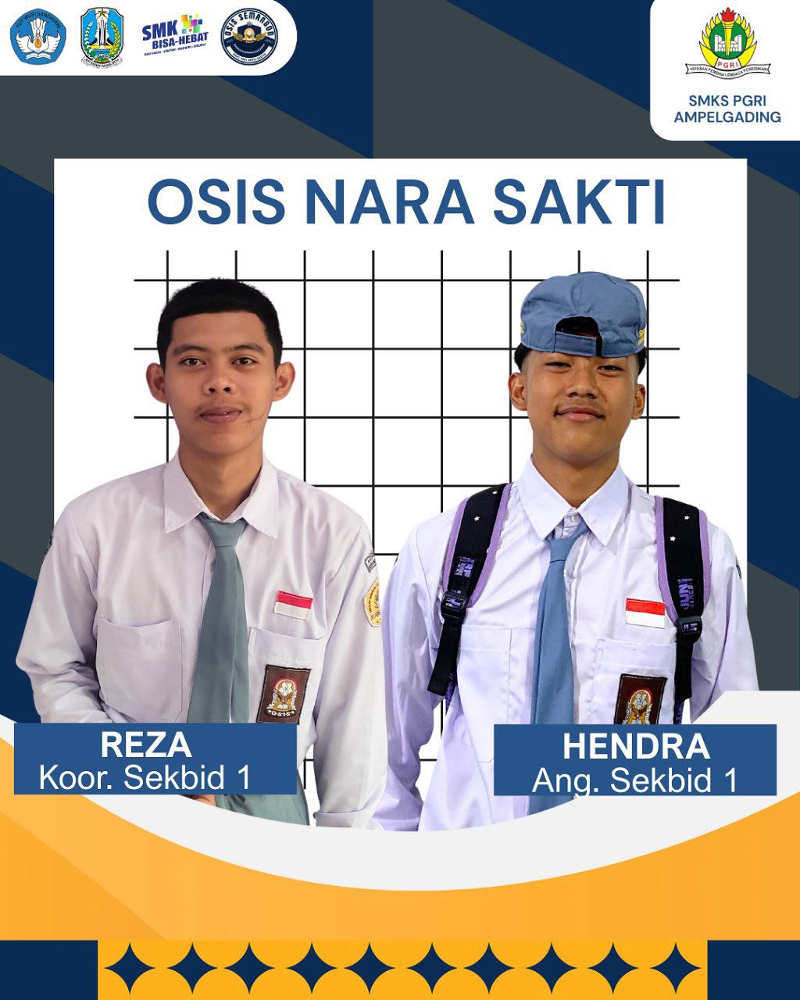
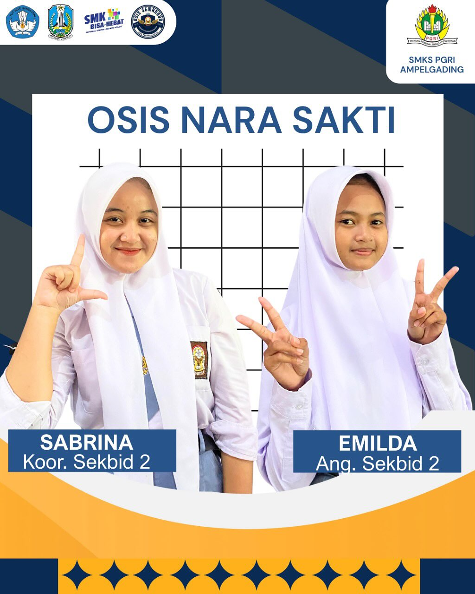
mewujudkan generasi muda yang berakhlak mulia, menjunjung tinggi nilai moral, serta memiliki kepribadian luhur yang berlandaskan iman dan budaya bangsa.
mewujudkan generasi siswa yang berkarakter kuat, berjiwa nasionalis tinggi, cinta tanah air, dan siap menjaga persatuan bangsa.
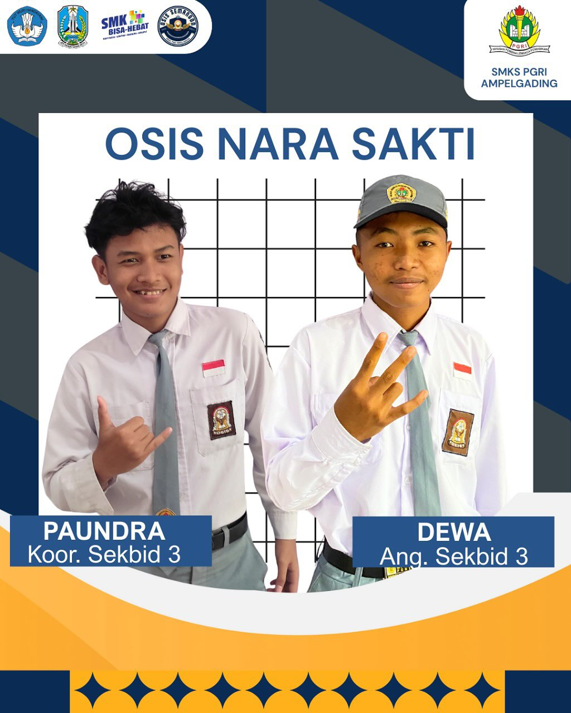
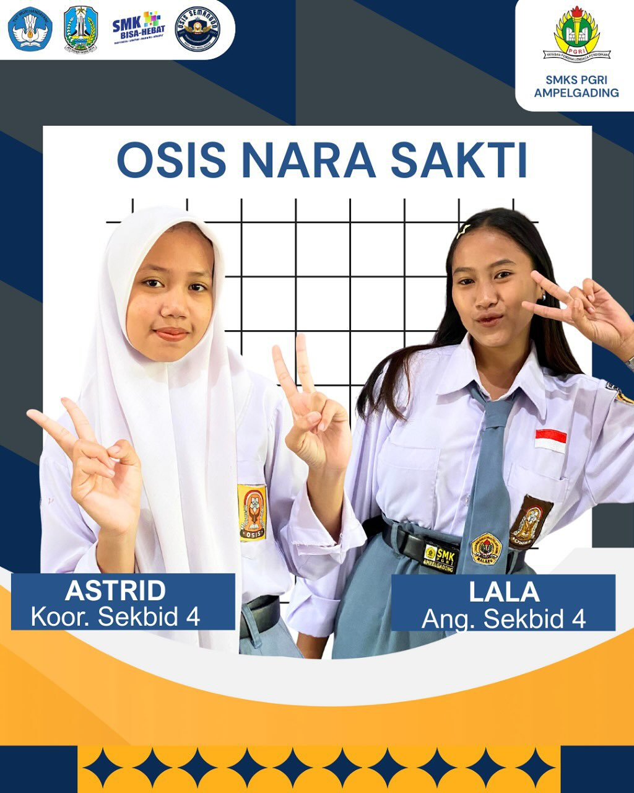
mewujudkan lingkungan belajar yang inovatif, suportif, serta mencetak siswa yang unggul, berprestasi, dan berkarakter.
mewujudkan lingkungan sekolah yang menjunjung tinggi nilai-nilai keadilan, transparansi, toleransi, dan kesetaraan, serta menjadi wadah bagi siswa untuk menyalurkan aspirasi secara aktif, kritis, dan bertanggung jawab.
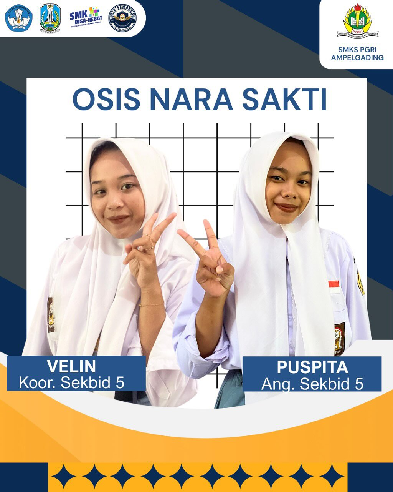
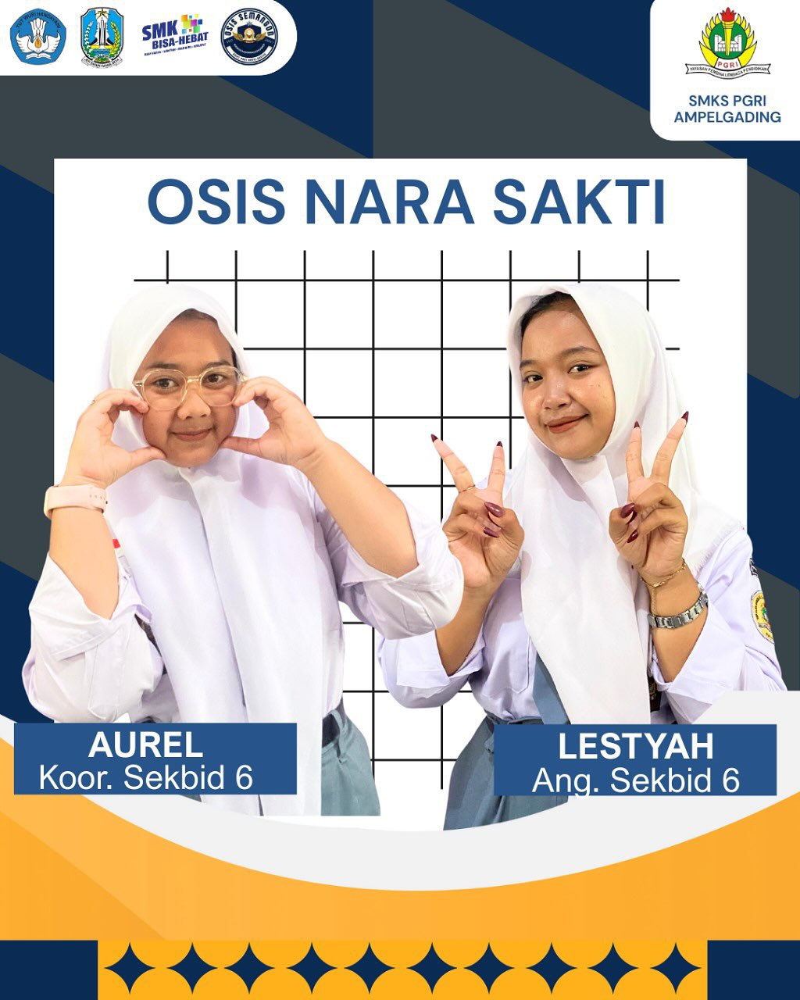
menjadikan wadah bagi siswa untuk mengasah bakat, memicu inovasi, dan menumbuhkan jiwa mandiri serta kewirausahaan.
mewujudkan generasi siswa yang sehat secara fisik, aktif, dan berprestasi, serta memiliki kesadaran tinggi akan pola hidup sehat.
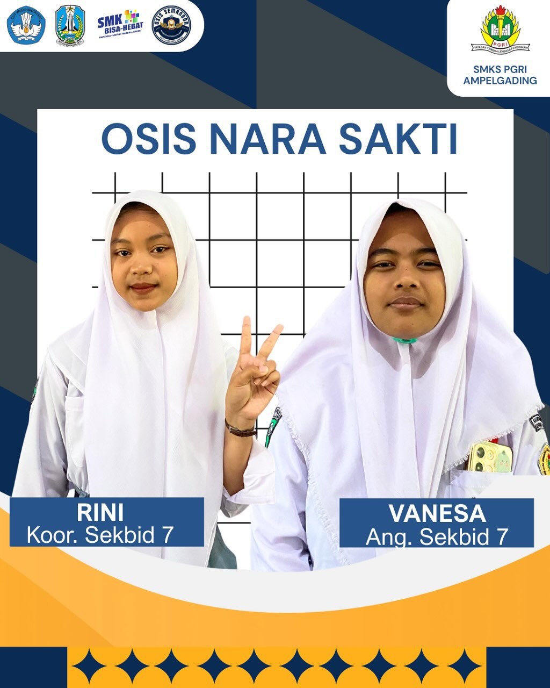
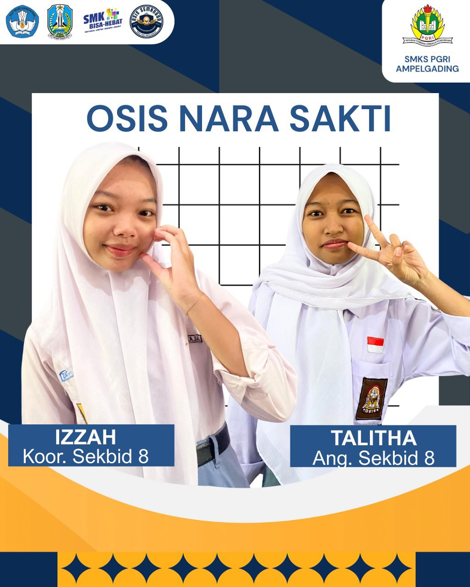
menjadikan bidang ini sebagai wadah inovatif untuk menggali potensi, melestarikan nilai-nilai luhur, dan mengembangkan bakat siswa secara maksimal guna menciptakan generasi yang berkarakter, kreatif, dan menjunjung tinggi keanekaragaman.
@OSIS.SEMANGON